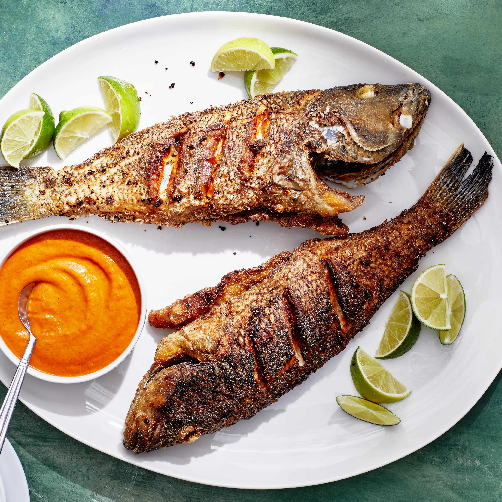

Fish
Fish Fried

Fried Fish
is any fish or shellfish that has been prepared by frying. Often, the fish is covered in batter, egg and breadcrumbs, flour, or herbs and spices before being fried and served, often with a slice of lemon.
Back to Home